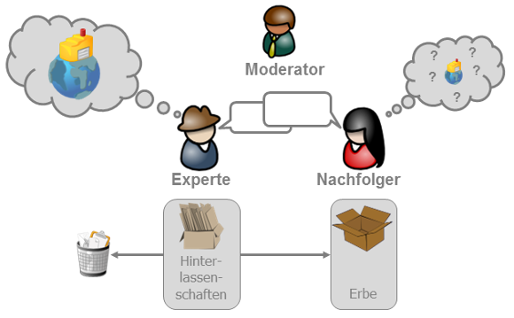

lernOS Expert Debriefing
Wissen von Expert:innen nachhaltig bewahren
von Simon Dückert und der lernOS Community
Inhalt
- Warum Expert Debriefing?
- Der Expert Debriefing Prozess
- Fallbeispiel: Community Manager
- Ausblick: KI im Expert Debriefing
- Erfolgsfaktoren
Expert Debriefing
Das Expert Debriefing ist eine Methode zum Wissenstransfer von Experten auf ein oder mehrere Nachfolger (z.B. bei Ruhestand, Abteilungswechsel, Kündigung, Sabattical, Elternzeit, Job Rotation).
Expert Debriefing Geschichte
- 1990er: EWITA-Wissenstransfer-Projekte bei Audi
- 2002: Erste Multiplikatoren-Schulungen bei VW (Wissensstafette)
- 2005: Expert Debriefing Einführung bei Schaeffler als Teil des Wissensmanagement-Portfolios
- Ab 2007: Offenes Schulungsangebot von Cogneon für Moderatoren
- 2018: Expert Debriefing wird Teil von lernOS
- 2025: Der 1.000 Expert Debriefing Moderator wird ausgebildet ü•≥
Warum Expert Debriefing?
- Wissensgesellschaft - Wissen macht den Unterschied
- Demografischer Wandel – wenn Erfahrung in Rente geht
- Fachkräftemangel – wenn immer weniger immer mehr machen müssen
- Fluktuation – neue Jobrealitäten
Rollen im Expert Debriefing
Expert Debriefing Referenzprozess

Persönliche Wissenslandkarte

Fallbeispiel: Community Manager

|
|
Expert Debriefing Erfolgsfaktoren
- Die Teilnahme am Expert Debriefing ist freiwillig
- Vorgesetzte stehen hinter dem Prozess, lassen aber Freiräume zu
- Transparenz schaffen und Erwartungshaltungen der Beteiligten abholen
- Den Prozess professionell und auf Augenhöhe moderieren
- Den Experten durch Wertschätzung motivieren
- Den Prozess durch den Moderator strukturieren und kontrollieren
Stop talking, start doing!
- Nutze den lernOS Expert Debriefing Leitfaden
- Folge der Seite lernOS auf Linkedin
- Nutze die CONNECT Community für den Austausch (Kategorie: Wissenstransfer)